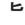

| DEI |
|
The nun played in the muddy water all DAY! |
| どろ |
mud
★★☆☆☆ |
| 泥棒 |
robber
★★★☆☆
KUNKUN1/2 KANA
a robber - not like a mugger but like a break-into-your-house-when-you're-not-home guy |
| 泥酔者 |
shit-faced
★☆☆☆☆
SARC
someone who is shit-faced drunk (泥酔する： to BE shit-faced) |
| Meaning | Hint | Radical | |
|---|---|---|---|
| 尼 | nun | HEEL |  |
| 泥 | mud | WET | 水 |
| 尻 | butt | NINE | 九 |
Nuns wear high-HEELS under their gowns.
The heels get WET from the MUD.
To beat a baseball team, you must kick NINE butts!
 KANJIDAMAGE
KANJIDAMAGE